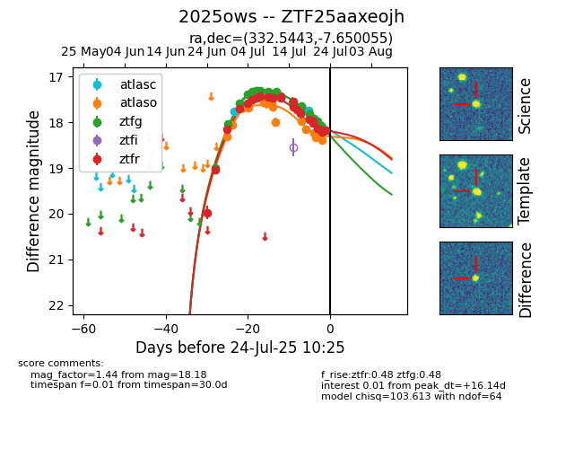

Target 2025ows at 2025-07-24 10:25, see:
FINK: fink-portal.org/2025ows
Lasair: lasair-ztf.lsst.ac.uk/objects/2025ows
ALeRCE: alerce.online/object/2025ows
TNS: wis-tns.org/object/2025ows
YSE: ziggy.ucolick.org/yse/transient_detail/2025ows
alt names
ZTF25aaxeojh (ztf,fink)
2025ows (tns,yse)
coordinates:
equatorial (ra, dec) = (332.5443,-7.65005)
galactic (l, b) = (52.3558,-47.16165)
photometry
last atlasc=18.17, atlaso=18.39, ztfg=18.10, ztfr=18.18
4 atlasc, 14 atlaso, 26 ztfg, 24 ztfr detections
